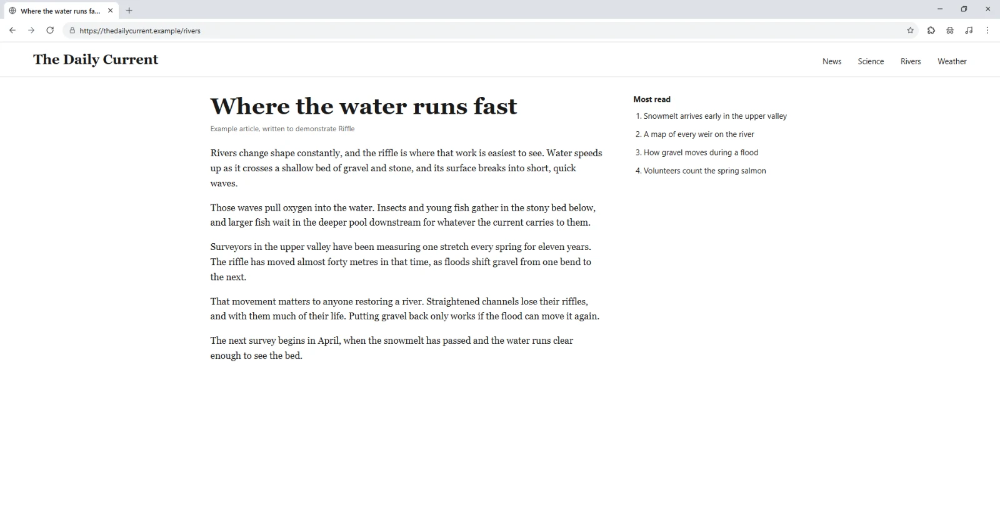
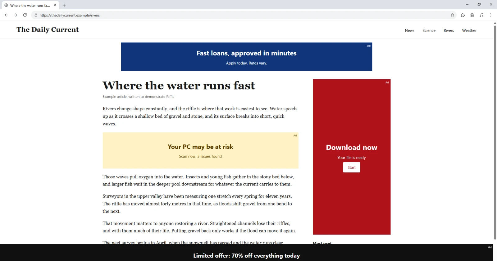
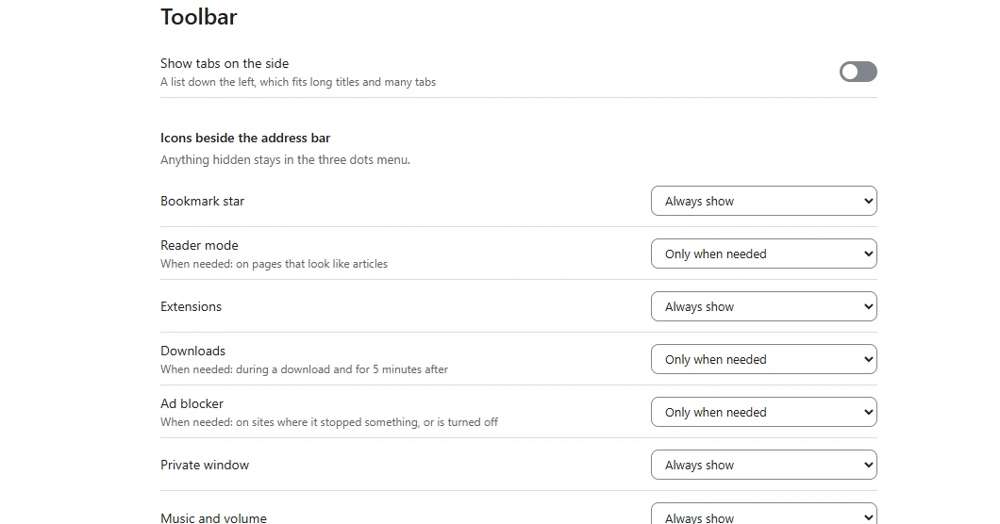

The browser that stops ads before they load
Riffle is a free browser for Windows. Ad blocking is built in rather than added as an extension, and you don't need an account.
Download for WindowsFree and open source. No administrator rights needed.


With ads With RiffleDrag to compare. Real Riffle windows, showing an example page we wrote.
Tabs give back their memory
Only your recent tabs stay loaded. The rest sleep and reload when you pick them, and tabs playing audio stay awake. The task manager shows exactly what each one is using.

Tabs and tools arranged your way
Keep tabs on top or in a side list, sort them into named, coloured groups, and choose which icons show beside the address bar.

Private by default, and open to check
No account, no telemetry
Bookmarks and history stay on your PC. Riffle contacts GitHub for updates and downloads public filter lists. Search suggestions go to your search engine, and you can turn them off.
Blocking that isn't an extension
Riffle runs Brave's open-source engine with public filter lists, so browser extension limits don't apply to it.
Updates you can verify
Riffle checks for updates each time it opens and confirms every download against its published checksum.
Questions
Is Riffle free?
Yes. It's free and open source under the MIT license, and you can read every line on GitHub.
Will my sites work?
Riffle uses the WebView2 engine built into Windows, the same one behind Microsoft Edge, so sites render as they do there. If ad blocking breaks a site, turn it off for that site from the shield.
Why does Windows warn me about the installer?
The installer isn't code-signed yet, so Windows treats it as a new app. Choose More info, then Run anyway. Each release lists a checksum so you can confirm the file.
Does Riffle collect my data?
Riffle adds no accounts, sync or telemetry. It does contact GitHub each time it opens for updates, and downloads filter lists every few days. Address bar search suggestions go to your search engine, and you can turn those off too.
How do I remove it?
Use Windows Settings, Apps. It asks whether to delete your bookmarks, history and logins too, and never touches files you downloaded.
Does it run on Mac or Linux?
No. Riffle runs only on Windows.
Get Riffle for Windows
Download for WindowsFree and open source. No administrator rights needed.
The installer isn't code-signed yet. If Windows warns you, choose More info, then Run anyway.